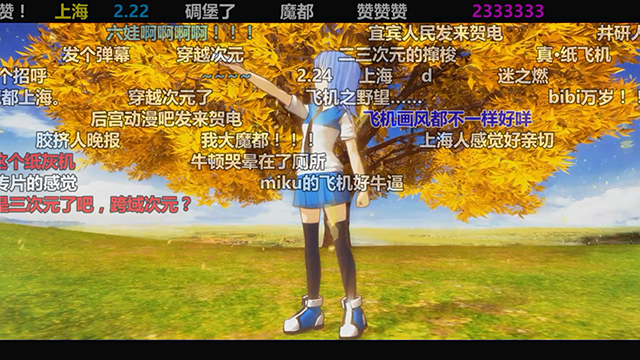

bilibili ASS Danmaku Downloader
以 ASS 格式下载 bilibili 视频弹幕
兼容 libass 和 VSFilter 的 ASS 格式解析器
点击网页中的下载按钮直接下载弹幕
兼容 libass 和 VSFilter 的 ASS 格式解析器
点击网页中的下载按钮直接下载弹幕
功能
以 ASS 格式下载 bilibili 弹幕
脚本会在视频页面上分享按钮左面显示下载弹幕的按钮，点击即可下载当前视频的弹幕。
已知问题：播放器自动下一分页时可能无法下载到正确的弹幕。
注意，如果您的机器配置较差，在弹幕较多的时候下载和转换可能会导致浏览器暂时的无响应，一般等待几秒即可。
脚本会在视频页面上分享按钮左面显示下载弹幕的按钮，点击即可下载当前视频的弹幕。
已知问题：播放器自动下一分页时可能无法下载到正确的弹幕。
注意，如果您的机器配置较差，在弹幕较多的时候下载和转换可能会导致浏览器暂时的无响应，一般等待几秒即可。
效果截图：

av936732在第343.0秒的带弹幕截图
浏览器兼容性
本脚本可以在以下浏览器上运行：
Firefox浏览器 + GreaseMonkey附加组件 （建议）
Chrome浏览器 + TamperMonkey扩展程序
Opera浏览器 + TamperMonkey Beta扩展
Firefox浏览器 + GreaseMonkey附加组件 （建议）
Chrome浏览器 + TamperMonkey扩展程序
Opera浏览器 + TamperMonkey Beta扩展
视频播放器兼容性
兼容使用了 libass 或 VSFilter 的播放器。
如果在您那里出现弹幕显示不正常的情况，请报告错误时注明您使用的播放器和相关配置。
如果在您那里出现弹幕显示不正常的情况，请报告错误时注明您使用的播放器和相关配置。
权限与隐私
脚本使用了 GM_addStyle 接口用于添加样式显示下载弹幕的按钮。
脚本使用了 GM_xmlhttpRequest 接口用于获取弹幕地址和弹幕信息。（如果获取失败当前可能下载到空弹幕）
脚本暂没有本地存储，也不会访问其他地址。后续版本可能会添加本地存储，到时再说。
脚本使用了 GM_xmlhttpRequest 接口用于获取弹幕地址和弹幕信息。（如果获取失败当前可能下载到空弹幕）
脚本暂没有本地存储，也不会访问其他地址。后续版本可能会添加本地存储，到时再说。
相关脚本
AcFun的弹幕下载请参考：AcFun ASS Danmaku Downloader